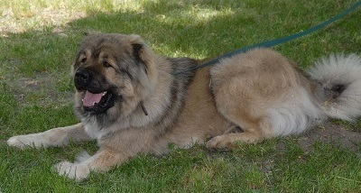
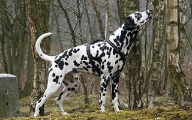
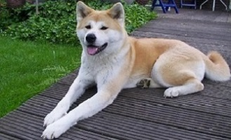
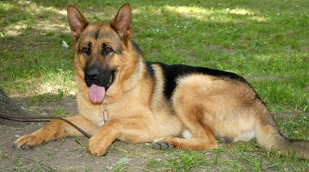

Zdravlje
Psi boluju od raznih bolesti, od kojih se neke mogu prenijeti i na čovjeka i druge životinje, dok su druge jedinstvene samo za pse.
Bolesti
Od infektivnih zaraza, pse najčešće povezujemo sa bjesnilom hydrophobia,canine parvovirus i canine distemper. Od urođenih bolesti kod pasa su najčešće displazije kukova, razne vrste epilepsija i plućna stenoza. Skoro svaka bolest koju može dobiti čovjek može dobiti i pas (osim specifičnih bolesti za čovjeka), kao što su rak, bolesti zuba, srca, itd..
 Životni vek
Životni vijek varira od vrste do vrste. Tako da gigantske vrste pasa žive, u prosjeku, od 7 do 8 godina, dok neki mali terijeri mogu živjeti i do 20 godina. Kod mješanaca, srednje veličine životni vijek je od 13 do 14 godina. Zapisano je da je najstariji pas živio 29 godina.Iako se ne može predvidjeti niti kontrolisati koliko dugo će neka životinja živjeti, životni vijek se ipak produžuje ispravnom ishranom, vježbanjem, redovnim posjetama veterinaru i brigom o životinji.
Psihologija pasa
Najsigurniji način za razvijanje osjećaja prema psima i njihovoj psihologiji je pažljivo promatranje štenadi u leglu. Čak i prije nego što prestanu sisati, štenad počinje pokazivati karakteristike koje pseću vrstu čine korisnom ili problematičnom za ljude.Uspješan odnos čovjeka i psa ovisi o mogućnosti vlasnika da "pročita" svog ljubimca i da može misliti kao pas.Pas je životinja koja pripada čoporu, koji ima urođenu potrebu za životom u sustavu hijerarhije. Već sa 4 do 5 tjedana očigledno je koji dio legla je dominantniji i kako se ta dominacija iskazuje. Dominantno štene je ono koje prvo jede, koje započinje igru i ono koje se usudi izaći iz legla.Kad napusti leglo, štene dobiva novo društvo koje čine svi članovi jednog kućanstva; i ljudi i životinje. Odvojeno od sigurnosti i topline legle,neće se opustiti dok potpuno ne upozna novi teritoriju.
Jezik pasa
Kako pas odrasta, razvija cijeli repertoar signala i držanja tijela koji će objašnjavati njegovo ponašanje. Pas koji ima povjerenja u čovjeka pokazuje svoje osjećaje u uzdignutom stavu na sve četiri noge, uspravnih ušiju i uzdignutog repa. Kada treba pokazati poslušnost, pas koji nije psihički jak, spustit će rep, staviti uši u vodoravan položaj i ponekad okrenuti glavu u stranu kako bi izbjegao izravan pogled, a može čak leći na leđa.Većina psećih znakova - od veselog mahanja repom do uplašenog režanja - prilično su lako razumljiva, ali pi na taj način se upoznati s čovjekom). Uzdignute ruke ili ruke kojima čovjek vrši nagle pokrete (na koje su psi 40 puta perciptivniji od ljudi) kod psa mogu izazvati krivo tumačenje i potrebu za obranom.